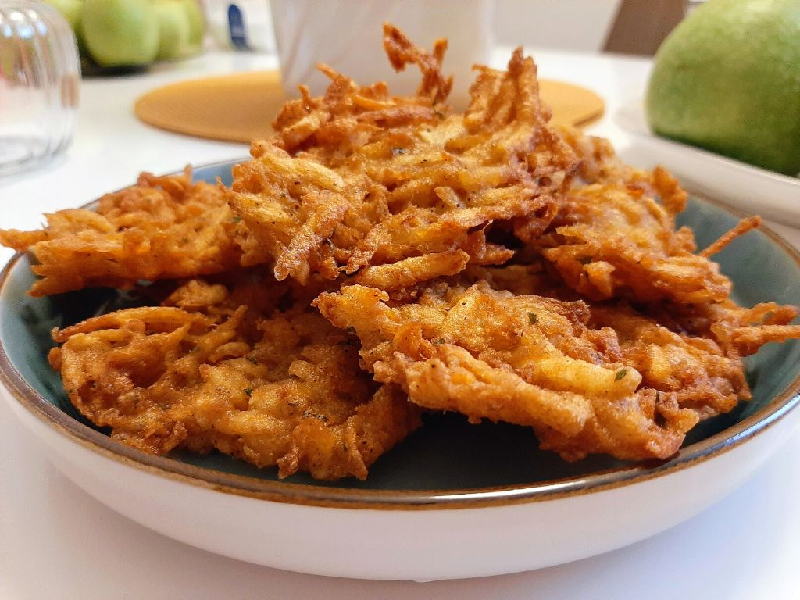

Tócsni

Hozzávalók:
- 750 g burgonya (pucolt súly)
- só ízlés szerint
- 1 db tojás
- 50 g finomliszt
- 1 kk fokhagymapor (vöröshagymapor)
- bors ízlés szerint
- 2 dl repceolaj
Elkészítés:
- A burgonyát nagylyukú reszelőn lereszeljük, majd besózzuk, és hagyjuk állni 10 percet. Érdemes eleve egy tál fölé tett szitába reszelni a krumplit, mert így a felesleges lé egy jó része magától kicsepeg belőle.
- A burgonyát a pihentetés után kézzel kinyomkodjuk - nem kell nagyon alaposan, maradjon azért nedvesség benne. A kinyomkodott krumplit áttesszük egy nagy tálba.
- Hozzáadjuk a felvert tojást, a lisztet, majd ízlés szerint sózzuk, borsozzuk és megszórjuk hagymaporral. Alaposan összeforgatjuk a tésztát, majd hagyjuk 10 percet pihenni - közben felforrósíthatjuk az olajat.
- A tócsnitésztát egy kanál segítségével a forró olajba porciózzuk, majd ott kicsit szétterítjük-szétnyomkodjuk. Nagyjából oldalanként 2-2 perc alatt aranybarnára sütjük, majd egy hűtőrácsra tesszük lecsepegni.